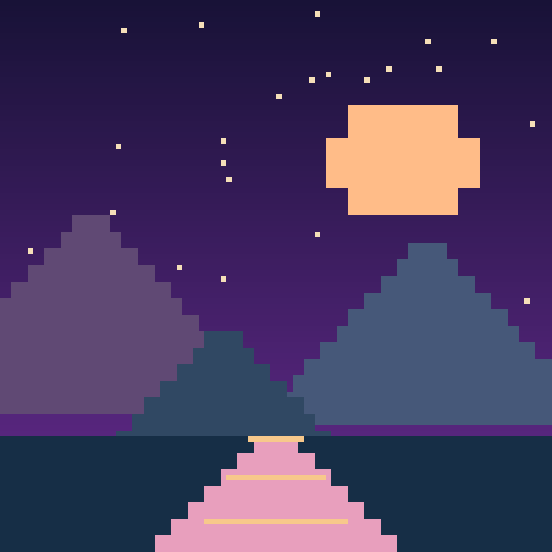

Фритрек и нулевой спринт: Подготовка к работе

Это было самое начало пути. На этом этапе важно было проникнуться основами и настроиться на учёбу. И, возможно, подумать, как новые знания могут повлиять на ваше будущее.
В начале важно не знать всё заранее, а разрешить себе учиться. Один небольшой шаг понятнее, чем весь путь целиком.